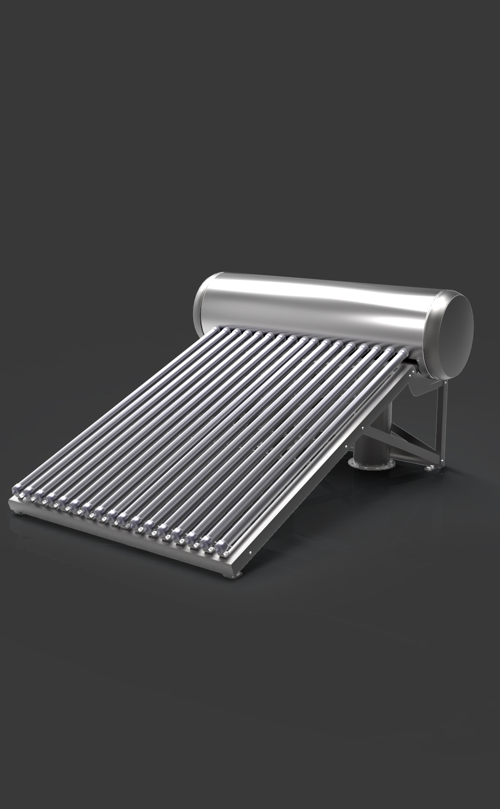

太阳能热水器把太阳光能转化为热能，将水从低温度加热到高温度，以满足人们在生活、生产中的热水使用。

阳光穿过吸热管的第一层玻璃照到第二层玻璃的黑色吸热层上，将太阳光能的热量吸收，由于两层玻璃之间是真空隔热的，热量不能向外传，只能传给玻璃管里面的水，使玻璃管内的水加热，加热的水变轻沿着玻璃管受热面往上进入保温储水桶，桶内温度相对较低的水沿着玻璃管背光面进入玻璃管补充，如此不断循环，使保温储水桶内的水不断加热，从而达到热水的目的。